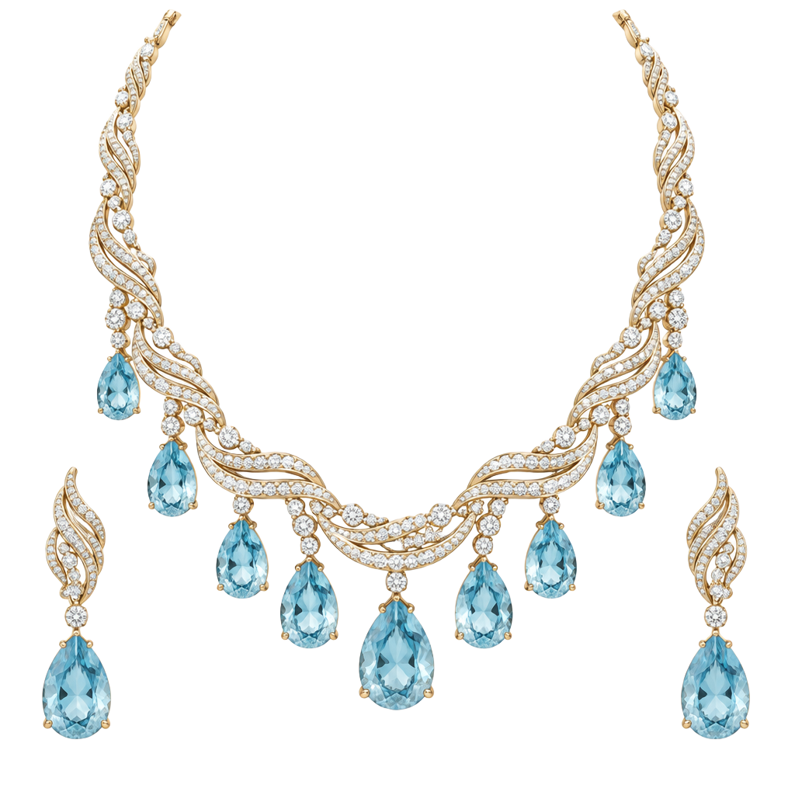

01 · The sea
A rhythm in velvet.
Waves hold a thousand passing reflections.
THE SEE COLLECTION · 05
Inspired by the sea.
Made to stay.
The rhythm of a wave. The light within a droplet. Ocean-inspired curves imagined in gold, diamond and aquamarine.
Fluid lines gather into a necklace, while pear-shaped stones echo the sea’s suspended drops. A fleeting movement becomes a personal expression.
- INSPIRATION
- The movement of the sea
- CHARACTER
- Fluid · Luminous · Sculptural
This jewellery study is illustrative, not ready stock. Your final design, specifications and price are confirmed personally.